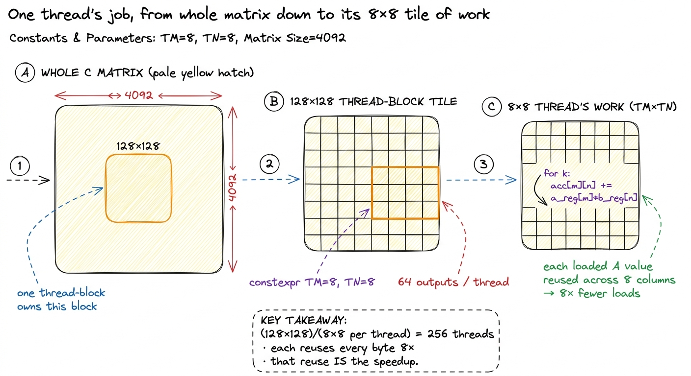
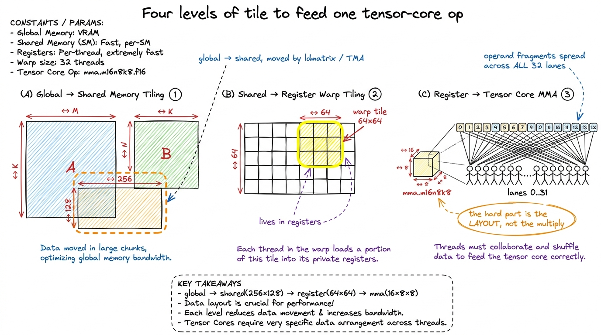
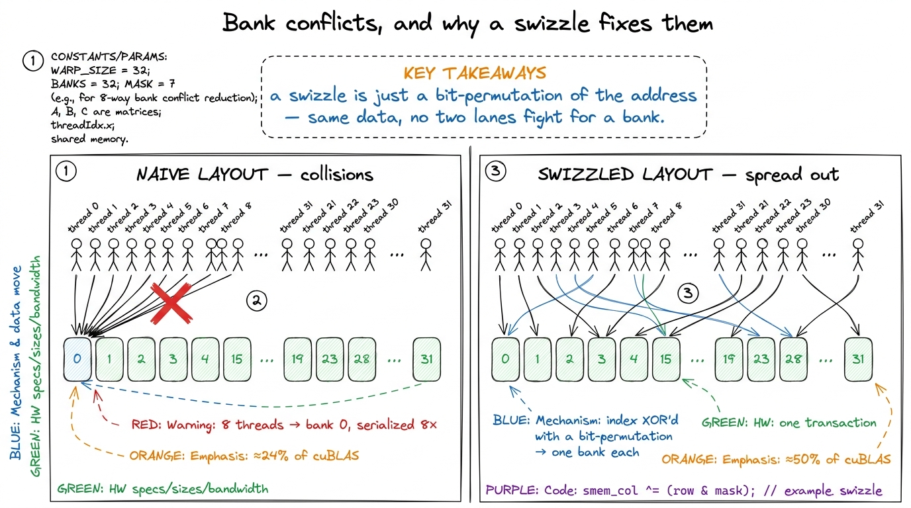
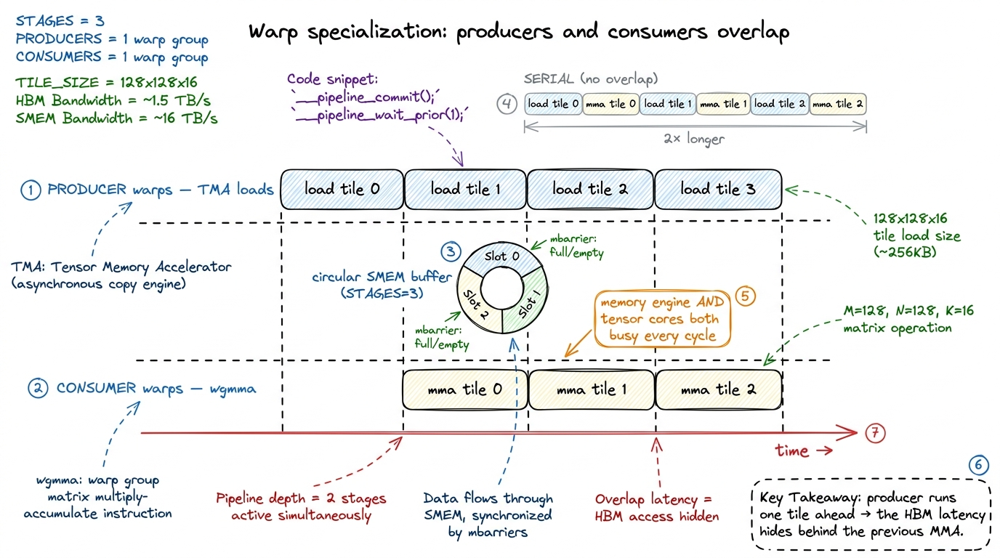
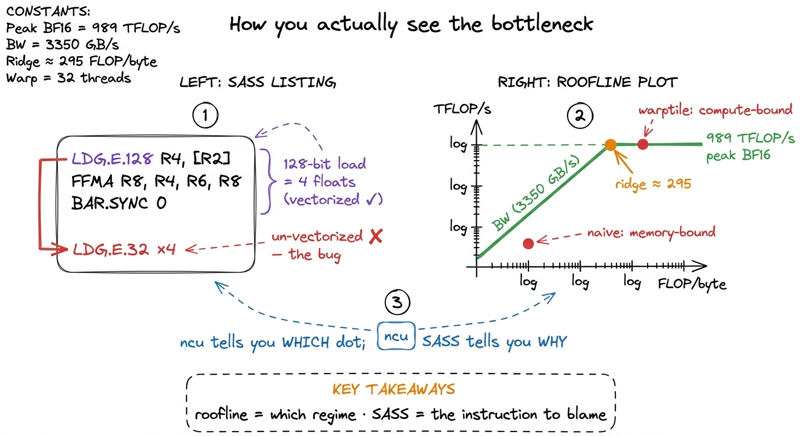
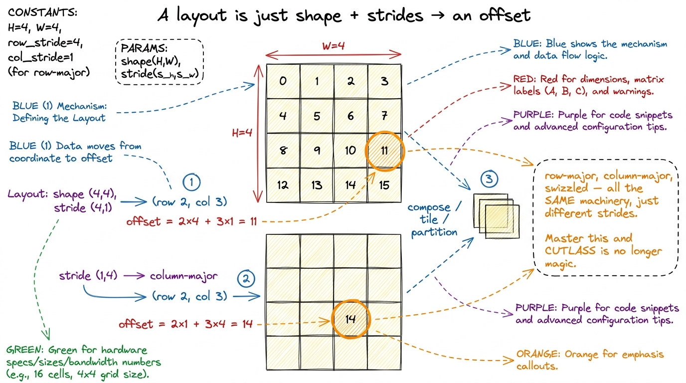
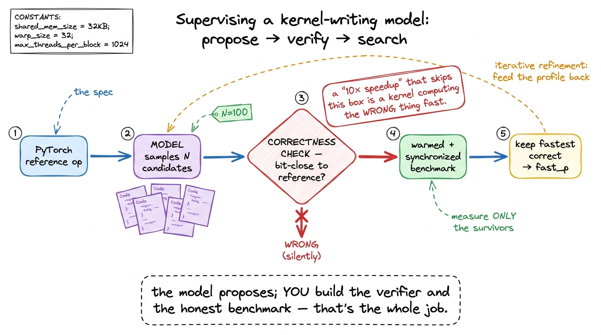

The kernel engineer's skill map CAREER
Let me start with the question this whole site is trying to answer, because it is not the question most people ask.
When someone new tells me they want to "get into GPU programming," they almost always follow it with: what should I read? They picture a stack of books — the CUDA C++ Programming Guide, the PTX ISA reference, a Hopper whitepaper — and imagine that once the stack is finished, they will be a kernel engineer. I understand the instinct. It is how most of school works. But it is the wrong shape for this field, and the hiring managers I have talked to — the ones staffing GPU teams at inference startups and the big labs — confirm it. They never ask what you have read. They ask what you have built, and whether you can be handed a slow kernel and a profiler and figure out why it is slow.
So let me define the job precisely, because the definition is the whole map. A kernel engineer is someone who can be handed a GPU and a slow piece of math and, within an afternoon, tell you why it is slow, which of a small number of hardware resources it is starved for, and what the next version should do differently — and then write that version and prove the speedup with a profiler. Notice how concrete that is. It is not "knows CUDA." It is a short list of checkable abilities, each of which you can practice until you own it.
This article is the map of exactly those abilities. It is deliberately the first thing on this site, because before you climb you should see the whole staircase and know why each step is where it is. I will walk every skill, explain why it sits where it does, do enough napkin math that the numbers feel earned, and point at the exact place on this site where each skill is taught in full. By the end you should be able to read a job description for a "CUDA kernel engineer" the way I do — as a checklist you can systematically close.
First, the one idea everything hangs on
Before the ladder, I want to plant a single mental model, because we are going to reuse it on every single rung. Here it is: a GPU kernel is always fighting for one of three resources, and your entire job is to find out which one and stop wasting it.
The three resources are compute (how many multiply-adds per second the chip can retire), memory bandwidth (how many bytes per second it can pull from its main memory, HBM), and overhead (everything else — launch cost, synchronization, the CPU not feeding the GPU fast enough). Every kernel, at every moment, is bottlenecked by exactly one of these. A kernel that is memory-bound is sitting idle waiting for bytes to arrive; giving it more math to do costs nothing, because the compute units are already twiddling their thumbs. A kernel that is compute-bound is the opposite; the bytes are there, the multiply units are saturated, and the only way forward is to do fewer or cheaper operations.
Why does this one idea matter so much? Because it turns "make it faster" — which is vague and infinite — into "find the bottleneck, then remove it" — which is finite and checkable. It is the difference between flailing and engineering.
 figure rendering · The central mental model, reused on every rung: a kernel is always bot
figure rendering · The central mental model, reused on every rung: a kernel is always botKeep that kitchen in your head. Every rung below is, underneath, a story about moving a kernel from one of these regimes to another, or about squeezing more out of the regime it is stuck in. This mental model has its own full article — the three regimes — and I would keep it pinned on the wall beside you as you read the rest.
The six things they actually check
Strip away the résumé noise and the interview loop for a kernel role reduces to six competencies. They form a ladder — each one assumes the one below it — and they map almost one-to-one onto the sections of this course. I will list them first, then spend the rest of the article walking each one slowly.
- Matrix multiply from scratch. Can you take
C = A · Bfrom a naive one-thread-per-output kernel to something within shouting distance ofcuBLAS, in plain FP32 CUDA, and explain every step with a measurement? - Tensor-core matmul. Can you feed the actual matrix-multiply hardware —
mma,wmma,wgmma— instead of the general-purpose FP32 ALUs, and handle the fussy register layouts that requires? - Beating cuBLAS on H100. Can you use the Hopper-specific machinery — Tensor Memory Accelerator (TMA), thread-block clusters, warp specialization — to reach or exceed the vendor library?
- Profiling → CUTLASS → SASS. Can you drive Nsight Compute, read a roofline, drop into a production template library, and when it lies to you, read the machine code?
- CUTLASS the hard way. Do you understand the abstractions —
CuTe, layouts, tiled MMA, copy atoms — well enough to build with them rather than copy-paste from them? - AI-generated kernels. Can you supervise a model that writes kernels — verify correctness, run test-time search, and not get fooled by a "10× speedup" that is actually a broken benchmark?
 figure rendering · The six competencies a GPU-kernel interview actually probes, as a ladd
figure rendering · The six competencies a GPU-kernel interview actually probes, as a laddWhy a ladder and not a checklist you can attack in any order? Because the skills genuinely nest. You cannot feed tensor cores (rung 2) until you understand tiling (rung 1). You cannot beat cuBLAS with a fancy pipeline (rung 3) until you can read the profile that tells you the pipeline is stalling (rung 4 in spirit, met informally on the way up). And you certainly cannot supervise a model that writes kernels (rung 6) until you can read the profile it reacts to and the machine code it emits. The order is not arbitrary; it is the dependency graph of the knowledge. Let me walk each rung, and each time point at where it lives.
Rung 1 — Matrix multiply from scratch
This is the foundation and the filter. If you cannot climb the GEMM ladder, nothing above it will hold. So let me set the task up carefully, from zero, because a beginner should be able to start right here.
Matrix multiply — GEMM, general matrix-matrix multiply — is C = A · B. To compute one output element C[i][j], you take row i of A, column j of B, multiply them element by element, and sum. For matrices of size N × N, there are N² output elements and each costs N multiply-adds, so the whole thing is about 2N³ FLOPs. The dumbest correct GPU kernel assigns one thread to each output element, and each thread reads a full row of A and a full column of B straight from global memory.
Now — Socratic pause — why should that be slow? The multiplies are trivial and the GPU has thousands of threads. It should scream. Let us think about what the hardware is actually doing. Every value that thread reads comes from HBM, main GPU memory, hundreds of cycles away. And here is the killer: adjacent output elements re-read almost the same data. C[i][j] and C[i][j+1] both read the entire row i of A. Nothing is cached or shared; the same bytes are dragged across the chip over and over. The arithmetic per byte loaded is roughly one FLOP per byte.1 The exact access counts depend on the tiling scheme. Boehm's write-up tallies them per kernel — the naive kernel does K/16 GMEM accesses per result, 1D blocktiling with 8 results/thread drops that to K/32, and 2D blocktiling with 64 results/thread reaches K/64. Fewer trips to HBM per unit of math is literally what every rung-1 optimization is buying.
Put that on the kitchen model: the chefs are idle, drumming their fingers, while an exhausted courier hauls the same sacks up from the basement again and again. This kernel is violently memory-bound. And that is why it is slow — not despite the GPU being fast, but because we never let the fast part work.
 figure rendering · Rung 1's core aha, as a before/after. The naive kernel re-reads the sa
figure rendering · Rung 1's core aha, as a before/after. The naive kernel re-reads the saThis single exercise carries so much weight because it forces you to derive every core GPU idea from a measurement rather than memorize it. Coalescing, shared-memory tiling, register blocking, vectorized float4 loads, occupancy, autotuning — none of it is introduced as a fact; each shows up because the profiler pointed at it. The canonical version is Simon Boehm's, and the numbers are strikingly reproducible. Watch how they climb, and notice that every early win is a memory win, exactly as the regime model predicts:
- Naive, one thread per output, lands at 309 GFLOP/s — 1.3% of cuBLAS.
- Global memory coalescing — a one-line change so that adjacent threads read adjacent addresses, letting the hardware fuse 32 loads into one transaction — roughly quadruples it to 1,986 GFLOP/s, 8.5%. Memory throughput alone jumps from about 15 GB/s to 110 GB/s, a ~7× improvement, from reordering the same loads.
- Shared-memory tiling — load a block into on-chip shared memory once, reuse it — reaches 12.8%.
- 1D register tiling — each thread now computes 8 results, so it reuses each loaded value across all 8 — is 2.2× faster again, 36.5%.
- 2D tiling — 64 results per thread — doubles it to 68.7%.
- Vectorized
float4loads nudge to 78.4%. - Autotuning the tile sizes reaches 84.8%.
- Warp-tiling lands at 21,779 GFLOP/s — 93.7% of a library NVIDIA has tuned for fifteen years, from nothing but profiles.2 Those percentages are FP32, square matrices (4092×4092), on one specific GPU. The absolute GFLOP/s wobble across cards — the last two steps read 19.7 → 21.7 TFLOP/s on an A100, and autotuning is worth ~5% (19 → 20 TFLOP/s) on an A6000 — but the ratios and the ordering of the wins are remarkably stable. That stability is exactly why this is a good teaching ladder: the lessons transfer even when the silicon changes.
Let me make the regime claim concrete with the actual napkin math, because this is where the "why" lives. For 4092² FP32 matrices the computation is about 137 GFLOPs, and the absolute minimum data you must move — read A, read B, write C — is about 268 MB. Divide: if a kernel touched memory only that minimum, it would do roughly 137e9 / 268e6 ≈ 500 FLOPs per byte. cuBLAS gets close, hitting about 245 FLOPs/byte with only ~500 MB of transfers. The naive kernel, re-reading everything, is down near one FLOP per byte — hundreds of times worse. The whole ladder is the story of dragging that number from 1 toward 245, and every step does it by touching HBM less.

figure rendering · Rung 1 zoom-in. Register tiling means one thread computes a small squaOn this site this is the entire GEMM Ladder section. It opens with kernel 1, the naive baseline, and every rung follows the same worklog loop — hypothesis, then code, then a profile, then a bold number, then the bridge to the next kernel. If you internalize only one section here, make it this one; it is the vocabulary everything else is spoken in.
The prerequisite mental model — knowing which resource you are fighting before you write a line — is exactly the three regimes we planted at the top. The naive matmul is a textbook memory-bound kernel at roughly one FLOP per byte loaded, hundreds of times below the H100's ridge point of about 989e12 / 3.35e12 ≈ 295 FLOPs per byte. Every win below the tensor-core rung is a memory win, and the regime model is why.
Rung 2 — Tensor-core matmul
Here is a fact that should stop you. The 93.7% ceiling on rung 1 is a lie of omission. It is 93.7% of FP32 cuBLAS — and FP32 cuBLAS does not touch the tensor cores at all. So we spent all that effort to nearly match a library that itself is not using the fastest hardware on the chip.
How much faster is the fast hardware? The general-purpose FP32 ALUs on an H100 do a few dozen TFLOP/s. The tensor cores do roughly 989 TFLOP/s of dense BF16 — well over an order of magnitude more. So rung 1's beautifully-tuned 93.7% is, in absolute terms, leaving the great majority of the chip on the floor. Rung 2 is learning to feed that other machine.
And it really is a separate machine, not just faster ALUs — this is the part that surprises people. A normal ALU takes two scalars and multiplies them. A tensor core takes two small matrices, multiplies them, and accumulates, all in one instruction. You issue a matrix-multiply-accumulate: mma.sync.aligned.m16n8k8... at the PTX level, the friendlier wmma API a level up, or on Hopper the warp-group wgmma. Each instruction consumes a small fixed-size tile — 16×8×8, say — but here is the fussy part: the operand fragments are laid out across the registers of an entire warp (all 32 threads) in a specific, non-obvious pattern. No single thread holds a whole operand. The data is smeared across the lanes.
So — Socratic question — where does the real work go? Not the multiply. The multiply is one instruction. The work is getting the bytes into the exact registers of the exact lanes the tensor core expects. That is what ldmatrix exists for. And it is why the tiling deepens to four levels: a global tile in HBM → a 256×128 tile in shared memory → a 64×64 per-warp tile in registers → the hardware's 16×8×8 op. Each level is a smaller container that repackages the data for the next.3 wmma is the portable, forgiving API and a fine place to start; raw mma/wgmma PTX is less portable and more work but is where the last chunk of performance hides. Alex Armbruster's tensor-core worklog reaches 96% of cuBLAS at 8192×8192 using the PTX path, climbing from ~8% up through swizzling, async prefetch, and double buffering.

figure rendering · Rung 2. A single tensor-core instruction eats a 16×8×8 tile whose operThere is one more resource problem lurking here, and it is worth pulling out because it is where a lot of rung-2 performance is won or lost: shared-memory bank conflicts. Shared memory is organized into 32 banks. If the 32 threads of a warp all hit different banks, the access is one fast transaction. If two threads hit the same bank, the hardware serializes them. The naive layout for tensor-core fragments makes threads collide on banks constantly, and the fix — a swizzle — is a bit-permutation of the shared-memory index that spreads the accesses back across all 32 banks. This sounds like a footnote. It is not. Swizzling alone is worth going from about 24% to about 50% of cuBLAS on this rung.

figure rendering · Rung 2's quiet giant. Bank conflicts serialize a warp's shared-memoryOn this site this is the Tensor Cores section: what a tensor core is physically, the fragment-layout problem, ldmatrix, and the wmma-then-mma progression. The bank-conflict story it depends on — why a swizzle is a bit-permutation of the shared-memory index, and why the 32 banks punish the naive layout — is developed in full in the shared memory article.
Rung 3 — Beating cuBLAS on H100
This is where "competent" becomes "hired." Matching FP32 cuBLAS is an exercise; beating BF16 cuBLAS on an H100 means using the parts of Hopper (sm_90a) that did not exist before it. There are three, and they are the entire game. Let me introduce each by the problem it solves, because each one is a direct answer to a bottleneck we have already met.
TMA — the Tensor Memory Accelerator. On rung 2, every thread spent cycles computing addresses and issuing loads to move tiles from HBM into shared memory. That is overhead — the manager at the door of our kitchen, busy with logistics instead of cooking. TMA is a dedicated hardware DMA engine: you hand it a descriptor for a whole tile, and it copies HBM → shared memory asynchronously, with the swizzle applied for free, while the threads go do math. It removes the address-computation overhead entirely and overlaps the copy with compute.
Thread-block clusters and distributed shared memory (DSMEM). Here is a waste we have not named yet. Several thread blocks running on nearby SMs often need the same tile of data, and each one independently re-reads it from HBM. Clusters let a group of SMs form a unit whose members can read each other's shared memory. So a single TMA load can be multicast to several SMs at once, and the tile crosses the expensive HBM boundary only once instead of once per SM. This is the rung-1 "stop re-reading HBM" idea, promoted from within-a-block to across-a-cluster.
Warp specialization. Instead of every warp in a block doing the same load-then-compute dance, you split them: some warps are producers that only run TMA loads, and some are consumers that only run wgmma. They pass tiles through a circular shared-memory buffer, coordinated by mbarriers, so the loading of tile k+1 overlaps the computing of tile k. It is a genuine on-chip producer–consumer pipeline, and it is what keeps both the memory engine and the tensor cores busy at the same time.

figure rendering · Rung 3. Warp specialization turns load-then-compute into a pipeline: pStack those three and you get past the vendor. The public worklog that does this reaches 107% of cuBLAS — 764 versus 716 TFLOP/s at one size. And the source of that final margin is a lovely, subtle thing: an 83% L2 cache hit rate versus cuBLAS's roughly 70%, won by scheduling thread blocks along a Hilbert curve so that blocks running near each other in time also touch data near each other in memory, which keeps that data hot in L2.4 This exploits the H100's ~50 MiB L2 (two partitions joined by a crossbar, 128-byte lines split into four 32-byte sectors). "Beating cuBLAS" is real but narrow — it holds for specific shapes and precisions; cuBLAS is a generalist covering thousands of shapes, and that generality is exactly the seam a specialist kernel exploits. Do not read "107%" as "cuBLAS is bad." Read it as "a specialist beats a generalist on the specialist's home turf."
The pipeline-overlap intuition — why double buffering hides latency, why the producer must run ahead of the consumer — is the same idea you first met as async prefetch on rung 2, now promoted to a first-class hardware feature. Here is the shape of the mainloop, schematic and not compilable, but it shows the producer/consumer split and the circular buffer exactly:
// The shape of a warp-specialized Hopper mainloop (schematic, not compilable).
if (warpgroup_is_producer()) {
for (int k = 0; k < K_TILES; ++k) {
wait_for_empty(buf[k % STAGES]); // consumer freed this slot
tma_load(buf[k % STAGES], A_tile, B_tile); // async HBM -> SMEM, swizzled
arrive_full(buf[k % STAGES]); // signal the consumers
}
} else { // consumer warpgroups
for (int k = 0; k < K_TILES; ++k) {
wait_for_full(buf[k % STAGES]);
wgmma(acc, buf[k % STAGES]); // tensor-core MMA on the tile
arrive_empty(buf[k % STAGES]); // release the slot to producer
}
}Read that against the timeline figure: wait_for_empty/arrive_full on the producer side and wait_for_full/arrive_empty on the consumer side are the mbarriers that keep the two lanes exactly one tile out of phase. On this site this is the Hopper Programming Model section — TMA, clusters/DSMEM, wgmma, and warp-specialized pipelines — culminating in a capstone worklog that reproduces the >100%-of-cuBLAS result end to end.
Rung 4 — Profiling → CUTLASS → SASS
Now stop and ask the honest question: everything above is impossible without the ability to see. How did anyone know the naive kernel was memory-bound? How did anyone know the swizzle was the fix, or that the pipeline was stalling? They measured. So the ability to see is not a support skill; it is a graded, first-class competency of its own, and it is rung 4. The standard curriculum for it is the GPU MODE lecture series (formerly CUDA MODE), which walks from Nsight Compute fundamentals through CUTLASS internals and down into reading SASS.
The skill has three depths, and it is worth being precise about what each one gives you.
First, Nsight Compute (ncu). You launch a kernel, read the memory-workload and compute-throughput sections, place the kernel on a roofline, and state its regime in one sentence: "72% of peak DRAM throughput, 4% of peak FP32, so it is memory-bound, so fusion is the move." That sentence is the deliverable. The roofline is just our kitchen model drawn as a graph — a sloped line for the bandwidth limit, a flat ceiling for the compute limit, and a ridge point where they meet. Whichever line your kernel is sitting under names its regime.
Second, CUTLASS as a tool. When hand-rolling stops paying — when you have climbed the ladder and want production coverage across many shapes — you reach for NVIDIA's production template library and understand its knobs (tile shapes, stages, schedules) well enough to pick them rather than guess.
Third — and this is the depth that separates senior from mid — reading SASS, the actual machine ISA the driver runs. Not PTX, the portable virtual assembly, but SASS, the real thing. When ncu tells you a kernel is register-bound or that a loop failed to unroll, the SASS is where you confirm it and see exactly why.5 PTX is a portable virtual ISA that ptxas compiles further into SASS; the two do not correspond line-for-line, and the interesting optimizations — register allocation, instruction scheduling, dual-issue — happen in that second step. If you only ever read PTX you are reading the compiler's input, not its output. That distinction has bitten every engineer who "checked the PTX" and declared victory.

figure rendering · Rung 4. The roofline names your regime; the SASS names the instructionLDG.E.128 versus four LDG.E.32 is a vectorized load versus a wasted one, and only the disassembly shows it.Read that SASS panel slowly, because it shows the whole point of the rung. LDG.E.128 is a single 128-bit load — four floats in one instruction, the vectorized float4 from rung 1. Four separate LDG.E.32 instructions move the same four floats in four trips. Same data, four times the load pressure. The roofline told you the kernel is memory-bound; the SASS tells you the exact instruction responsible. That pairing — which regime from the roofline, which instruction from the SASS — is the entire diagnostic loop.
On this site this is the Profiling & Tooling section: an ncu-driven walkthrough, the roofline article, a CUTLASS orientation, and a SASS-reading primer that annotates a real disassembly the way the GEMM-ladder articles annotate their profiles. Every worklog on the site already leans on this section implicitly — this is where it is made explicit.
Rung 5 — CUTLASS the hard way
Using CUTLASS by copying an example is rung 4. Understanding it is rung 5, and the two are far apart. Let me explain the central abstraction from scratch, because it is genuinely the key that unlocks the whole library.
Everything in modern CUTLASS is built on CuTe, and CuTe is an algebra of layouts. What is a layout? It is nothing more than a shape paired with strides — a rule that maps a logical coordinate, like "row 3, column 5," to a physical memory offset. That is it. A row-major matrix is one layout; a column-major matrix is another; a swizzled shared-memory tile is a third. Once you can compose layouts (apply one, then another), tile them (carve a big layout into a grid of small ones), and partition them (hand each thread its slice) — all by hand, on paper — the whole library stops being magic. The scary template soup is just layout algebra with types attached.
On top of layouts sit two more ideas. Tiled MMA describes how a single tensor-core op is replicated across the threads of a warp — the exact fragment-scattering you fought by hand on rung 2, now expressed as a layout. And copy atoms wrap ldmatrix, TMA, and vector loads into composable data-movement primitives, so the messy machinery of rungs 2 and 3 becomes a library of interchangeable parts.

figure rendering · Rung 5's key idea, by hand. A layout maps a coordinate to an offset viWhy does this rung exist as its own skill, separate from "use CUTLASS"? Because the abstractions are only legible after you have suffered the manual versions. The best treatment — "learn CUTLASS the hard way" — makes you write the naive, coalesced, shared-memory, tiled, and raw-WMMA kernels first, reaching a 70× speedup by hand, and only then introduces CuTe as the thing that would have written all of that for you. That is the whole pedagogy of this site, so the fit is exact: you climb rungs 1 through 3 by hand before you see them re-expressed as layouts and atoms. The pain is the prerequisite for the elegance.
On this site this is the CUTLASS Internals section, sequenced after the by-hand ladder: the layout algebra, tiled MMA, copy atoms, and one worked example rebuilding a ladder kernel in CuTe so you can see both versions side by side.
Rung 6 — AI-generated kernels
The newest rung, and the one every interviewer in 2025 is suddenly curious about: can a model write these kernels, and — the real question — can you supervise it? Let me give you the honest state of the art, with numbers, and then explain why the interesting skill is not "prompt the model" but "verify the model."
Start with the sobering baseline. Frontier models, left alone, produce a correct-and-faster-than-PyTorch kernel less than 20% of the time on the KernelBench benchmark (the fast_1 metric across all three difficulty levels). And they fail worst at exactly the hard parts — tensor-core intrinsics and the Hopper machinery from rung 3. There is a structural reason: CUDA code is only about 0.073% of The Stack v1.2 training corpus, so the models have simply seen very little of it. GPU programming is data-starved in a way that, say, Python web code is not.6 To fight that scarcity the community has been generating data at scale — the GPU MODE leaderboard has accumulated 60,000+ kernel submissions across five competitions. Data scarcity, not some deep incapacity, is a big part of why models are weak here; the gap narrows as targeted data appears.
Now the interesting part. The workflow around the model changes the picture sharply, and that workflow is the skill. First you need a harness: KernelBench, which uses PyTorch itself as the specification language — you write the reference op in PyTorch, and a candidate kernel is scored by fast_p, the fraction of problems it solves correctly and at least p× faster than PyTorch eager. Then you apply techniques that are obvious once you reframe the problem as search over a verified space:
- Test-time search — sample many candidates, keep the ones that pass. DeepSeek-V3 with 100 parallel samples jumped from 4% to 37%
fast_1on the fusion tier (Level 2). - Iterative refinement — feed the profiler output back to the model across turns so it reacts to real measurements. DeepSeek-R1 with refinement went from 36% to 72% on the same tier.
- Multi-turn RL — the Kevin work (a QwQ-32B base) trained the model across turns and lifted correctness from 56% to 82%, and mean speedup from 0.53× to 1.10× over PyTorch eager, beating OpenAI's o1-mini (0.78×). Tellingly, single-turn RL made models play it safe with unoptimized-but-correct kernels; only multi-turn training pushed them to explore the risky, high-performance moves.

figure rendering · Rung 6. The load-bearing skill is not prompting — it is the verify-andThe through-line, and the thing an interviewer is really testing, is that verification is the load-bearing skill. The model proposes; you build the correctness check and the honest benchmark. Why does this matter so much? Because the most common failure mode is not an obviously broken kernel — it is a convincing one. A "10× speedup" that is actually a kernel computing the wrong thing very fast, or a benchmark that forgot to call cudaDeviceSynchronize() and is timing the launch instead of the work, or a warm-up that never happened so you measured the first cold run. The whole field is littered with these.7 The people running these benchmarks are blunt about it: "we have seen several results focused on flashy performance results, many of which are functionally incorrect or reward hacked in subtle ways." Kernel timing is especially fragile to environment-specific variation. Treat any suspiciously good AI-generated number as broken until a correctness check and a warmed, synchronized benchmark say otherwise.
There is a genuinely hopeful counterpoint, though, and it is worth ending the rung on. The Stanford CRFM "fast kernels" work is the cleanest demonstration that a disciplined search-plus-verify loop can match or beat PyTorch's own optimized ops on several kernels — their FP32 Conv2D, LayerNorm, Softmax, and matmul all land at or above torch on an L40S — while being candid that the same loop still struggles on the hard cases like FP16 matmul and Flash Attention. So the honest summary is: with a rigorous harness, models are already useful on the easy and medium tiers, and still human-dependent on exactly the tiers that require rungs 2 and 3. Which is precisely why this rung sits last. You can only supervise a kernel-writing model if you can yourself read the profile it reacts to and the SASS it generates. Rung 6 is not a replacement for rungs 1–5; it is the thing you can only do because of them.
What a graduate can honestly say
Put the six rungs together and there is one sentence a person who has finished this site can say without exaggerating, and that a hiring manager will recognize as true:
"I can take a matrix multiply from a naive kernel at 1.3% of cuBLAS to a warp-specialized Hopper kernel that matches or beats it, feed the tensor cores with wgmma and TMA, prove every step with Nsight Compute and SASS, rebuild it in CUTLASS with CuTe, and supervise a model that writes kernels well enough to catch it when it lies."
Notice that every clause is a rung, and every rung is, underneath, the same kitchen with three ways to be slow. "1.3% to matching cuBLAS" is dragging a kernel out of the memory-bound regime by re-reading HBM less. "Feed the tensor cores" is switching to a machine an order of magnitude faster, then fighting to keep it fed. "Warp-specialized Hopper" is overlapping the memory engine and the compute engine so neither idles. "Prove every step" is the ability to see which regime you are in. And "catch it when it lies" is verification — the discipline that makes all the rest trustworthy. One mental model, six times, at rising resolution.
That is the whole map. Start at kernel 1, keep the three regimes on the wall beside you, and climb one rung at a time.